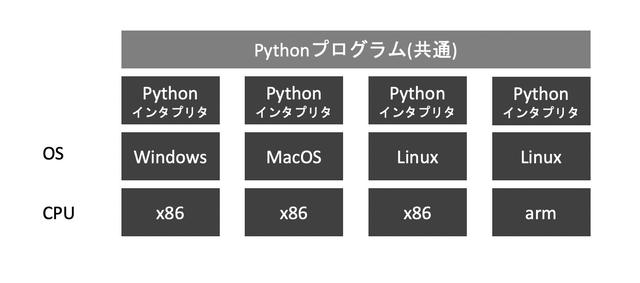
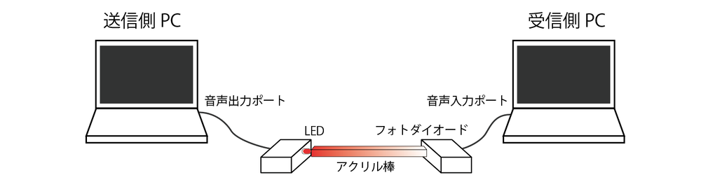
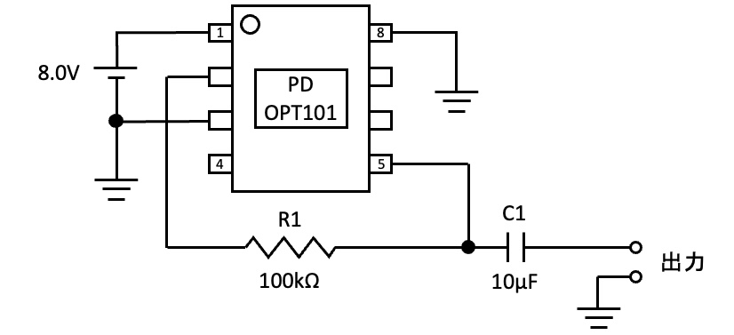
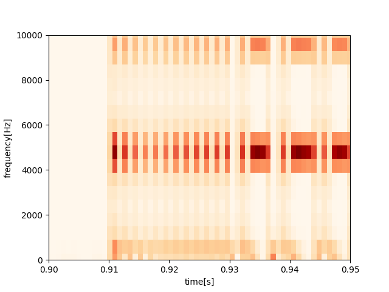
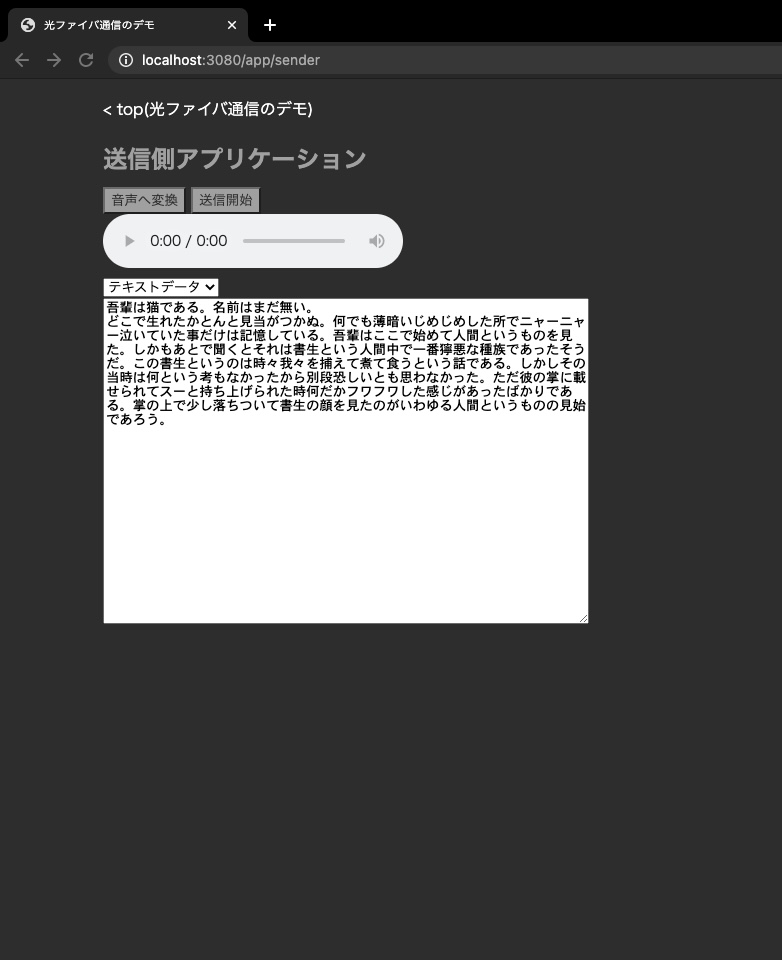

可搬性に優れた光通信デモシステムの研究
2020年度卒業論文
指導教員 高橋 浩 教授
上智大学理工学部情報理工学科
A1778594 池田 力
1. はじめに
光ファイバーを用いた光有線通信の重要度は近年ますます高まっている。
2020年には第5世代移動通信システム(5G)が携帯電話キャリア各社からサービスの提供が開始されるなど、無線通信の通信速度が向上している。
しかし、光ファイバーによる有線通信が不要になるわけではなく、むしろ必要性が増している。
携帯電話の基地局間における通信やクラウドサービスのデータセンターには非常に大きな帯域が必要であり、光通信なくしては快適なインターネット環境は成り立たない。
光通信はいわば幹線道路であり、末端の交通量(通信量)が増えれば増えるほどより車線数の多い道路(帯域が広い通信経路)が必要になるのである。実際、JPIX社が公式サイトで公開している情報によると、毎秒1テラビットもの情報がやりとりされており[1]、非常に大きな帯域が必要であるとわかる。
その一方で、通信工学の専門知識を持たない人々に光ファイバーを説明することは難しい。
これは日常生活において光ファイバーを触ったりする機会が少ない分、イメージが湧きにくいものであるからである。
実際に見たり触ったりしたことないものの理解が難しいことは執筆者も常々感じていることである。
光通信デモシステムを開発することはより多くの人が光ファイバーの仕組みや有用性を理解するのに大きな役割を果たすだろう。
本研究では、特殊な機器を用いることなく容易に入手できる部品や技術のみを用いて光ファイバデモシステムを開発した。
ここでいう特殊な機器とは、高額であったり専門店に出向かないと手に入らなかったりするようなもののことである。
今回用いた機器はすべてインターネットショッピングで購入でき、かつ価格もノートPCを除くと一番高額なもので数百円程度のものである。
また、使用したソフトウェアもすべて無料でダウンロードできるもので、手順に従えば誰でも再現できるように配慮した。
1.1 論文の構成
本論文は以下のように構成する。
第2章では研究を行うにあたり事前に調べたこと、使った知識について説明する。
第3章では実装について解説する。適宜ソースコードを交えて詳細に説明する。なお、ソースコードはすべてGitHub 上に載せてある。数万字程度の量になっているため本論文に全体を掲載することはしない。
第4章では作成したシステムが目的通り動作するか実験したことについて述べる。
第5章、第6章ではそれぞれ考察とまとめについて書く。実験・研究で得られた結果について検討を行う。
2. デモシステムの構成要素
本研究は光ファイバーの仕組みを再現したデモシステムを作ることで専門知識を持たない人でも光ファイバーについて理解を深められるようにすることを目的としている。
光ファイバーはインターネット通信の階層の中でも最も低いところに位置する。
そのため、普段インターネットを利用する際に意識して使う機会が少なく、そのことが光ファイバーが難しいものであると印象づけている一因となっていると考えられる。
2.1 OSI参照モデル
OSI参照モデルは国際標準化機構(ISO)によって策定された1994年に通信システムのモデルである。通信機能を実現するための7階層が定義されており、最も高いレイヤーから、アプリケーション層、プレゼンテーション層、セッション層、トランスポート層、ネットワーク層、データリンク層、物理層に別れている。
通信機能を階層構造で定義することによって、複雑なネットワークの設計を分担し、規格化しやすくしている。
それぞれの層について簡易的な説明を行う。
2.1.1 物理層
本研究の対象である光ファイバは物理層に属していた。そこで物理層をより深く検討してみよう。
物理層の定義はISO/IEC7498-1第2版 の7章7節2項によると以下の通りである。
The Physical Layer provides the mechanical, electrical, functional and procedural means to active, maintain, and de-active physical-connections for bit transmission between data-link-entities. A physical-connection may involve intermediate open systems, each relaying bit transmission within the Physical Layer. Physical Layer entities are interconnected by means of physical medium.
執筆者による日本語訳
物理層はデータリンクエンティティ間のビット伝送のための物理的接続を有効にしたり、維持したり、無効にしたりする機械的、電気的、機能的、手続き的な方法を提供する。物理的接続は開放型システムを介した接続も含み、各システムは物理層におけるビット伝送を中継する。物理層のエンティティは物理的な媒体によって相互的に接続される。
今回、以上の定義における物理的な媒体には光ファイバーが当てはまる。光ファイバーはルーティングや誤り訂正の責務を負わない。レーザー光を点灯した状態と消灯した状態を繰り返すことで、 0 と 1 を表現し、ビット伝送を行うのである。
さらに、ISO/IEC7498-1第2版では物理層がデータリンク層に対して提供するべき7つの要素を以下のように定めている。(括弧内は原文)
物理的接続 (physical-connections)
物理的なデータ単位 (physical-service-data-units)
物理的な接続端子 (physical-connection-endpoints)
データ回線の識別 (data-circuit identification)
データの順序付け (sequencing)
故障状態の検知 (fault condition notification)
帯域制御の提供 (quality of service parameters)
この中で物理的なデータ単位は通常 0 か 1 かで表現され、単位は1ビットである。しかし、無線通信においてはQPSKと呼ばれる位相変調方式によって一度に4状態(2ビット)の情報を送る場合もある。
2.1.2 プレゼンテーション層
プレゼンテーション層はインターネットの利用者に対して2番目に近い層である。逆に物理層と離れている層だが、デモシステムを構築するにあたってデータを表示する仕組みについて検討する必要があり、それにはプレゼンテーション層について理解が必要である。そこで、物理層と同じようにISO/IEC7498-1第2版を引用しながらプレゼンテーション層がどのようなものなのか考えてみよう。
アプリケーション層には3つの目的があるとされている。
アプリケーションエンティティが通信・参照する情報の表現方法を提供する。
アプリケーションエンティティ間で転送されるデータの共通の表現方法を提供する。これによりアプリケーションエンティティ同士があらゆる目的で共通の情報の表現方法を持つのを容易くする。言い換えれば、文法(データの表現方法)による依存をなくす。
伝送中にデータが変わっていないことを保証する。互いに通信するアプリケーション層は通信で使用する文法を決定しなければならない。プレゼンテーション層は使用できる文法を知ることができるため、お互いに使用可能な文法を決定する。
上記の3つをまとめると、プレゼンテーション層はデータの表現方法が通信するアプリケーション同士で同じになるようにし、送ったデータがしっかりと正しいことを保証するために存在しているということになる。
ただ、一般的な通信プロトコルにおいてプレゼンテーション層のみを提供するものは存在しないが、他の層と組み合わせたプロトコルが提供されている。例えば、プレゼンテーション層を含むプロトコルとしてHTTPやFTPなどがあり、セッション層を含むプロトコルとしてTLSがある。
2.2 Webアプリケーション
2.2.1 ユーザーインターフェイス
ユーザーインターフェイスとは、利用者(ユーザー)に対して提供される操作画面(インターフェイス)のことである。利用者に対して情報を出力したり、逆に利用者から命令を受け取ったりする。
ユーザーインターフェイスには大きな分類としてCUIとGUIがあり、CUIはディスプレイで文字を表示することで情報を提示し、命令はキーボードの文字入力により受け取る。GUIは文字以外にも表現力の高いグラフや画像を駆使することで多くの情報を提示し、命令はキーボード、マウスやタッチパネルにより受け取る。
2.2.2 GUI構築方法の比較
今回は専門知識を持たない人に見せるためのデモシステムであるため、GUIをベースとして構築することが良いだろう。GUIをどのように作るかを検討していく。GUIを構築する方法はいくつかある。
表2.1 構築方法によるメリットデメリットの比較
構築方法
使用言語
維持費
可搬性
難易度
性能
Windows Forms
Visual Basic / C#
○
✕
○(簡単)
○
Swiftアプリケーション
Swift
△
△
○
○
Webアプリケーション
HTML, CSS, JavaScript
○
◎
△
△
以下の節ではWebアプリケーションを構築するために必要な知識について論じる。
2.2.3 HTML/CSS/JavaScript
HTMLはHyperText Markup Languageの略で、その名前の通りハイパーテキストの構造を記述するための言語である。ハイパーテキストはプレーンテキストと対比されて用いられる言葉で、文字のサイズを変えたり、色をつけたりしたものを指す。また、画像を挿入することや、リンクを入れて別のWebページを参照することもできる。文章を構造化することでプレーンテキストよりも効率的に扱うことができることも大きな利点である。
<h1>文章表題</h1>
<p>ここに<b>文章の本文</b>を<big>入れます。</big></p>図2.1 HTMLによる文字装飾の例
図2.1のようにHTML単体でも装飾(サイズ変更、色付け)をすることはできるものの、文書の構造と装飾を一緒にするとファイルが肥大化してしまう恐れがある。そのような事態を避けるために生まれたのがCSS、Cascading Style Sheetsである。CSSを用いることで文字の装飾だけでなく、要素の配置方法など高度なデザインを行えるようになった。クラス名の指定などによるスタイルの変更の例を図2.2に示した。<style> タグを埋め込むことで直接CSSを記述できるようになっている。これによってファイルの肥大化の回避というメリットが薄まったことになるが、それでもなおCSSの記法はスタイリングの抽象度を高める上で重要な役割を果たしている。
<style>
h2 { color: red; }
.dark {
background-color: #333;
color: #fff;
}
.text-big { font-size: 1.3em; }
</style>
<h1>文章表題</h1>
<p>ここに文章の本文を入れます。</p>
<h2>第1章</h2>
<div class="dark">
この領域の背景は黒くなります。
</div>
<h2>第2章</h2>
<div class="dark text-big">
この領域は背景が黒くなる上に文字が大きくなります。
</div>図2.2 CSSによる高度な装飾の例
JavaScriptは現在のブラウザにおいて動作する唯一のスクリプト言語である。DOM操作や非同期通信などの機能を持ち、HTMLファイルを動的に変更したり、ユーザーから受け取った情報をサーバーへ非同期的に送ったりすることができる。JavaScriptの誕生により、Google Mapsのような継ぎ目のないWebアプリケーションを構築できるようになった。Google Mapsでは、世界中の地図を閲覧するのに縦横に自由にスクロールできる。それまでのWebアプリケーションではユーザーの操作を受け付けるたびにページの再読み込みが必要だったのに対して、非同期通信により再読み込みが不要になったのである。
<h1>文章表題</h1>
<p>ここに文章の本文を入れます。</p>
<div class="target">
この場所の内容は10秒後に変化します。
</div>
<script>
setTimeout(() => {
document.querySelectorAll(".target").forEach((elem) => {
elem.innerHTML = "内容が書き換わりました。"
})
}, 1000 * 10);
</script>図2.3 JavaScriptによるDOM操作の例
2.2.4 非同期通信/WebSocket
非同期通信はJavaScriptによるWebアプリケーションの特徴を論じる上で非常に重要なものである。そこで、独立した節として紹介する。
非同期通信が必要となるアプリケーションは以下の3つに分類できる。
共有のデータベースにアクセスする必要があるとき。
処理に計算リソースを多く使うか、プログラムのサイズが大きいなどの理由で利用者の端末により処理をすると時間がかかる場合。
JavaScript以外の言語で処理を書きたいとき。
1つ目は最も一般的な利用例である。Webアプリケーションの機能としてユーザーの認証情報を保存したり、受け付けた情報を保存したりする際にデータベースを利用することが普通である。保存した情報を取り出す際にもデータベースにアクセスする必要があるが、その際は非同期通信を介してやり取りを行う。
非同期通信において通信を行う方式の代表例に2つある。REST(HTTP/1.1)とWebSocket(HTTP/2)である。RESTではクライアントからサーバーへリクエストを送り、それに応じてレスポンスを返すという形をとっている。どんな操作をしたいか、どんな情報が欲しいかという内容をリクエストメソッドとパスの組み合わせで表現する。例えば、トップページが欲しいとき、トップページを表す /index.html と情報の提供をしてくださいを表す GET メソッドを合体し、 GET /index.html というリクエストの形式になる。情報を保存する処理をしたい場合、 POST というメソッドと、保存したい情報の種類を表すパス /clicked、データ ?page=top を組み合わせ、 POST /clicked?page=top というリクエストとなる。
図2.4 HTTP/1.1とHTTP/2の違い
2.3 ソフトウェア環境
ソフトウェアにおいて再現性が低くなる原因の1つが環境の差異である。同じプログラムでも先月まで動いたはずのものが動かなくなってしまったり、プラットフォーム(OSやCPUの組み合わせ)を変えたら動かなくなってしまったりするということは多々ある。
2.3.1 インタプリタ言語
インタプリタ言語は実行前にコンパイルされないプログラミング言語のことである。コンパイルを経ないため、実行できるインタプリタさえあればどんなプラットフォームでも動作するという利点がある。インタプリタによって動作する言語の代表例にPythonがある。PythonではインタプリタによってOSの機能が抽象化されており、ファイル読み書きといったOSに依存してしまう操作でも同じコードで動作するようになっている。また、動作速度を速くすることやファイルサイズを小さくすることを求めるコンパイラ言語とは違い、インタプリタ言語、特にPythonでは利便性やコード量を減らすことを指向している。そのため、標準モジュールだけでCSVファイルの操作、WAVファイルの読み書き、ZIPファイルの圧縮・解答などができるようになっている。
Pythonが動作する仕組みは図2.5のような状態である。OS、CPUの組み合わせごとにPythonインタプリタがビルドされており、共通のPythonプログラムをPythonインタプリタが通訳 することで動作している。

図2.5 Pythonが動作する模式図
2.3.2 Docker
Dockerとはコンテナ仮想化技術の1つである。コンテナとは仮想化されたバイナリ、ライブラリ、アプリケーションが一体になったもので、MacOSやWindows上でLinuxのOSでアプリケーションを立ち上げたものと同じ状態を再現することができる。Dockerfile という名前をファイルを作成し、以下のように記述すると「Ubuntu OSをベースにし、 build-essential, curl, git, unzip, vim, wget, sudo というコマンドをインストールする。」という環境を定義することができる。
FROM ubuntu:20.04
RUN \
apt update && \
apt -y upgrade && \
apt install -y build-essential && \
apt install -y curl git man unzip vim wget sudoこのDockerfileさえ用意すれば、あとはプラットフォームごとのビルドはDockerが自動的に行う。もし追加で依存パッケージをインストールしたい場合、Dockerfileへ追加していく。一度ビルドしたDockerfileは追加の記述があった場合、差分だけをビルドするため初回よりも速くビルドすることができる。図2.6に示す通り、アプリケーションはこの仮想化されたコンテナ上で実行されるため、プラットフォームごとの差異を気にせずにアプリケーションを構築することができるのである。この模式図は図2.5のインタプリタ言語のものと類似点が多い。しかし、最も異なるのは任意のバイナリファイルが実行できるということである。PythonのインタプリタであればPythonしか実行できないのに対して大きな利点と言える。
図2.6 Dockerが動作する模式図
3. デモシステムの概要
システムの全体像は図3.1に示す通りである。大きく4つのパートに分かれており、送信側ソフトウェア、送信側回路、受信側回路、受信側ソフトウェアの順にデータが伝わっていく。送信側ソフトウェアで送信したいデータの音声データへの変換、送信側回路で音声信号の光信号への変換、受信側回路で光信号から電気信号(音声信号)への変換、受信側ソフトウェアで音声データから元データへの復元を行っている。

図3.1 システムの全体像
3.1 変調方式
本デモシステムでは受信側の音声入力ポートの都合で変調方式にサブキャリアを用いた振幅変調方式を採用した。サブキャリアを用いた理由は以下の問題を回避するためである。
音声入力ポートの高周波成分の制約
コンデンサによるハイパスフィルタの影響
当初、搬送波に光信号をそのまま用いて、変調波周波数を$4,800\rm{Hz}$程度としていた。ところが、この方式では上記2つの問題が大きく影響してしまった。まず、光信号で振幅変調を行う場合、音声信号は矩形波となる。理想的な矩形波には無限に高い周波数成分まで含んでしまうため、受信側のPCで波形を記録すると元の波形が歪んでしまった。これは送信側で矩形波のエッジを緩やかにするという工夫を加えても解決しなかった。
サブキャリアで波形が安定した理由は、搬送波周波数の正弦波を含む信号か、0が連続する信号かどちらかしか存在しないため、単一の周波数成分しか含まないからということと、コンデンサを含む回路を通っても安定するからであると考えられる。
その後、復調処理の実装が進み、通信のサブキャリアによって安定的に通信ができることが判明したため、最終的に副搬送波周波数を$4,800\rm{Hz}$、副変調波周波数を$4,800\rm{Hz}$にすることで通信速度の向上を実現させた。
このようにサブキャリアを用いて様々なハードウェア上の問題を解決しながら通信速度を向上させることができることが分かった。
3.2 ハードウェア
今回のデモシステムではレーザーの代用としてLEDを、光ファイバの代用としてアクリル棒を用いた。LEDとアクリル棒を用いて通信を行えることは2019年度卒業論文〇〇において実証されている。LEDは1個十円から手に入り、アクリル棒も1本数十円程度の部品である。そのため、本研究の主題である可搬性を追求する上でも適した部品であると言える。
デモシステムにおいて電気回路が必要になるのは、信号に合わせてLEDを点灯させる回路と光を受け取り電気信号に変換する回路である。LEDを点灯させる回路は送信側電気回路として3.1.1項で、光を受け取り電気信号に変換する回路は受信側回路として3.1.2項で説明する。
3.2.1 送信側電気回路
送信側の回路は図3.2に示す通りである。送信側のコンピュータの音声出力ポートから出た電気信号を電圧をシフトさせることで、LEDの照度と電圧が線形的に比例するようにしている。シフトさせる電圧を3.2Vにすると最も歪みが小さくなる(小原, 2020)。
図3.2 送信側の回路
図3.3 LTSpiceによるLEDに流れる電流のシミュレーション結果
3.2.2 受信側電気回路
受信側の回路は図3.4に示した。OPT101という型番のフォトダイオードを用いて光信号を電気信号へ変換している。R1は帰還抵抗で、100KΩの抵抗をつけることで、受信側コンピュータの音声入力ポートの許容電圧に収まるように増幅率を調整している。

図3.4 受信側の回路
3.3 ソフトウェア
この節ではソフトウェアの実装について適宜ースコードを交えながら解説する。なお、ソースコードの全体は https://github.com/Tsutomu-Ikeda/senior-project に載せてある。
3.3.1 サーバー
サーバー側のプログラムでは、画像を音声ファイルに変換する処理と音声ファイルから画像を復元する処理を行っている。まずは画像の音声ファイル化の処理について解説する。
3.1節で説明したとおり、本研究のデモシステムではサブキャリアによる変調方式を採用することとした。変調方式の主要なパラメータは以下の通りである。
サブキャリアの搬送波周波数: $48{,}000 \rm{Hz} / 10 = 4{,}800 \rm{Hz}$
サブキャリアの変調波周波数: $48{,}000 \rm{Hz} / 10 = 4{,}800 \rm{Hz}$
import io, itertools, struct, math, wave
def create_wavedata(data_bytes):
fs = constants.SAMPLING_RATE # サンプリング周波数 48,000Hz
sub_career_freq = constants.SAMPLING_RATE // 10 # 搬送波周波数 4,800Hz
constants.ONE_BIT_SAMPLES = 10 # 1ビットを表現するのに使用するサンプル数
arr_bits = bytes_to_bits(data_bytes) # 画像のバイト列を1と0のビット列へ変換する
def get_fragment(val):
if val == 1:
yield from (
int(math.sin(
2 * math.pi * x / (fs // sub_career_freq)
) * constants.SHORT_MAX_VAL)
for x
in range(constants.ONE_BIT_SAMPLES)
)
else:
yield from itertools.repeat(0, constants.ONE_BIT_SAMPLES)
def get_array():
yield from constants.PREAMBLE
yield from arr_bits
wave_val = list(itertools.chain.from_iterable(
get_fragment(val)
for val
in get_array()
))
# WAVEファイルの形式へ変換する
temp = io.BytesIO()
w = wave.Wave_write(temp)
bin_wave = struct.pack(f"{len(wave_val)}h", *wave_val)
w.setparams((1, 2, fs, len(bin_wave), 'NONE', 'not compressed'))
w.writeframes(bin_wave)
w.close()
return temp.getvalue()get_fragment 関数の中で、値が 1 の場合は $4{,}800\rm{Hz}$ の正弦波を10サンプルだけ発生させ、 0 の場合は $0$ で10サンプルを埋めるようにしている。これをプリアンブルと画像のビット列に適用し、wave_val という配列を生成する。さらに、Python標準モジュールである wave と struct を用いることで、WAVEファイルの形式へ変換している。
次に音声ファイルから画像を復元する処理について解説する。
以下の5つの要因から受信側のコンピュータで記録された音声データのまま元の信号を復元することは難しい。
0Vの位置がずれてしまう
受信側の信号が上下対称とは限らない
最大振幅のブレが大きい
低周波成分が支配的になり電圧が変化しないと、コンデンサの特性が出てしまう
サンプル落ちが発生する場合がある
図3.4に受信側で録音された生のデータを示した。振幅が大きい部分が 1, 振幅が小さいところが 0 を表していることは目視では確認できる。しかし、プログラムを書いて処理するにあたり、定量的な値が必要となる。上記の問題からこの信号のまましきい値を設定することは困難である。
from tqdm import tqdm
import numpy as np
def stft(s, Lf=80, overlap=None):
if overlap is None:
overlap = Lf // 2
len_s = s.shape[0]
win = np.hanning(Lf)
Mf = overlap + 1
Nf = int(np.ceil((len_s - overlap) / (Lf - overlap))) - 1
S = np.empty([Mf, Nf], dtype=np.complex128)
for n in tqdm(range(Nf)):
S[:, n] = np.fft.rfft(
s[(Lf - overlap) * n:(Lf - overlap) * n + Lf] * win,
n=Lf,
axis=0
)
return np.abs(S)これをMatplotlibの pcolormesh メソッドでプロットしたものが図3.5である。
図3.5を見ると、サブキャリアの搬送波周波数である $4{,}800\rm{Hz}$ を中心に色が濃く、周波数の強度が強くなっていることがわかる。
図3.4 音声ファイルの元データ

図3.5 短時間フーリエ変換による周波数強度の時間変化のグラフ
もともと、送信側のパソコンで発していた周波数は $4{,}800\rm{Hz}$ であったため、それ以外の周波数は無視して処理しても問題ない。そこで、仮想的に $3{,}900\rm{Hz}$ から $5{,}700\rm{Hz}$ までのバンドパスフィルタを通過したと考え、その区間の周波数強度を合計すると、信号成分以外の余計な周波数を取り除くことができる。そのように処理をし、時間-強度でプロットしたグラフが図3.6である。図3.6を見ると、1 と 0のビットがしっかりと区別され、周波数強度 $150{,}000$ 付近にしきい値を設ければ良いことがわかる。
図3.6 3,900Hz-5,700Hzの周波数強度の合計の時間変化
3.3.2 送信側画面
3.3.3 受信側画面
4. 実験による実証
4.1 動作検証
基本的なデータ送受信ができることを確認するために3種類のデータを用意した。最も軽量なデータとしてテキストデータを、画像を送受信できることを確認するために軽量画像を、通信の安定性を確認するために大容量画像を用意した。
テキストには青空文庫から夏目漱石の吾輩は猫であるを用いた。UTF-8でエンコードし、815バイトのデータとなった。
吾輩は猫である。名前はまだ無い。
伝送に用いたテキストデータ
軽量画像はデモシステムの送信画面で A と手で書いたものを用いた。JPEG形式でフォーマットされており、4,248バイトのデータとなった。
大容量画像はデモシステムの送信画面でドラえもんを描いたものを用いた。この画像もJPEG形式でフォーマットされており、34,277バイトのデータとなった。ドラえもんを用いた理由は、筆者が描ける絵の中で最も複雑で、色数が多いキャラクターであったからである。
図4.1 軽量画像として用意した画像
図4.2 大容量画像として用意した画像
表4.1 10回ずつデータを送った際の成否と送信時間
種類
サイズ
試行回数
成功回数
伝送にかかった時間
テキスト
815B
10回
10回
1秒
軽量画像
4.08KB
10回
9回
5.2秒
大容量画像
34.6KB
10回
10回
39秒
送信側PC: MacBook Air 2020
3299バイトでエラー
4.2 通信速度の検証
通信速度= $1,200\ ビット / 秒 = 150\ バイト / 秒$
4.3 通信の安定性の検証
画像データ(JPEG)
43KBのJPEG画像を伝送した際の受信画像
5. 今後の展望
5.1 通信速度について
5.2 通信の安定性について
位相の変化
サンプルフリーズ
パケット再送
誤り訂正符号
5.3 可搬性について
6. まとめ
謝辞
本研究にあたり多大なる助言と力添えをくださった高橋浩教授に深く感謝を申し上げます。また、電気回路の設計では、昨年の小原先輩の卒業論文を参考にしました。心よりお礼申し上げます。
参考文献
付録